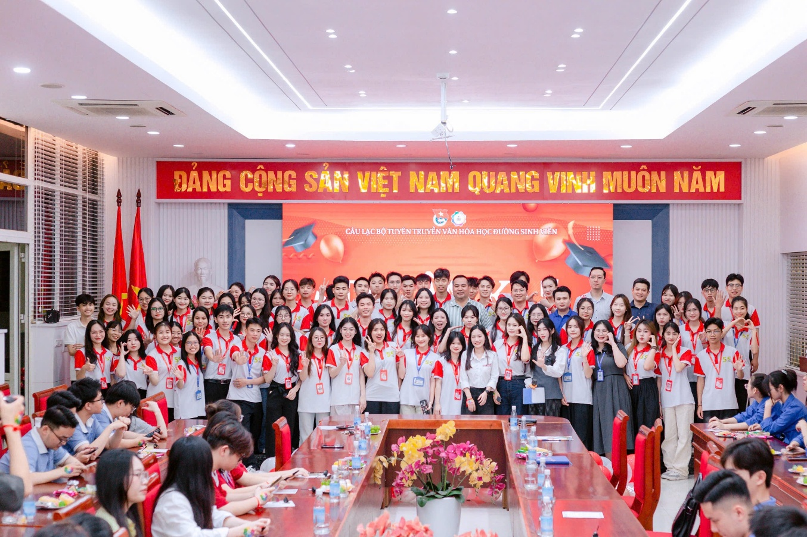
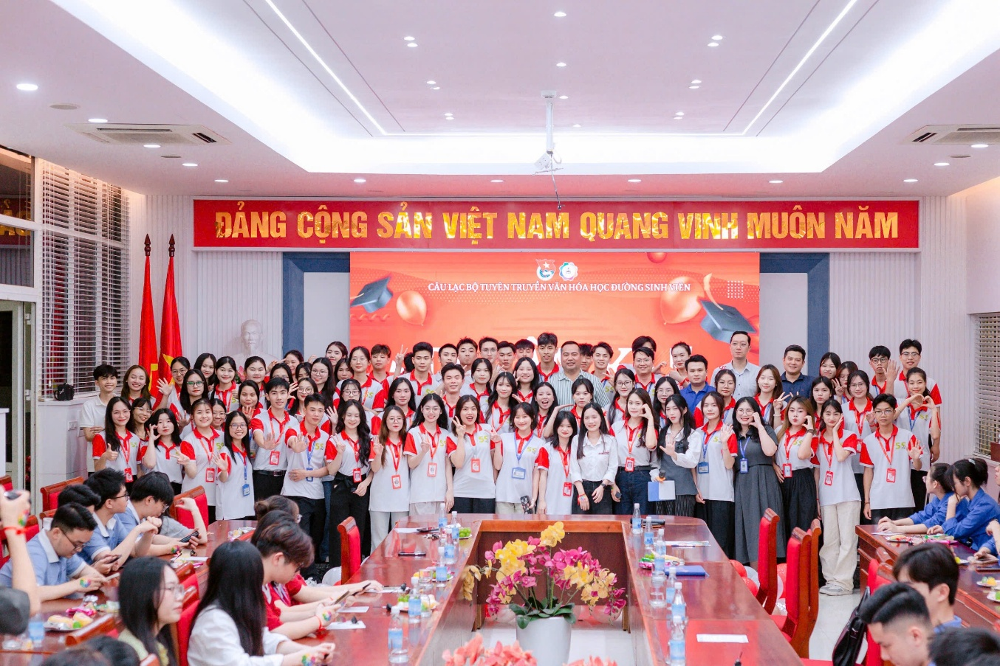
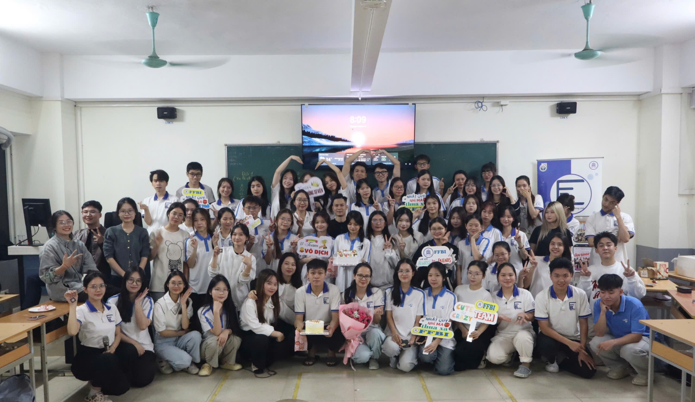
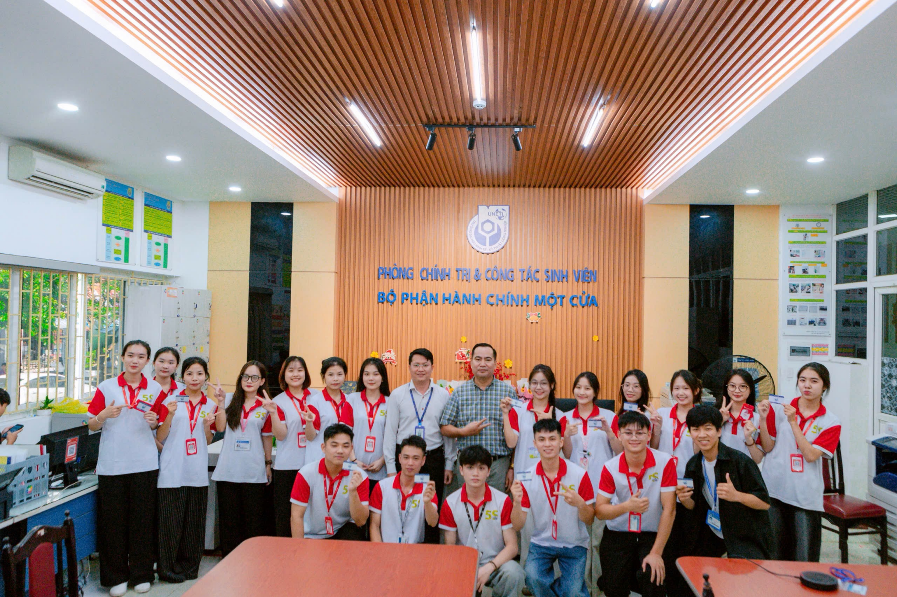
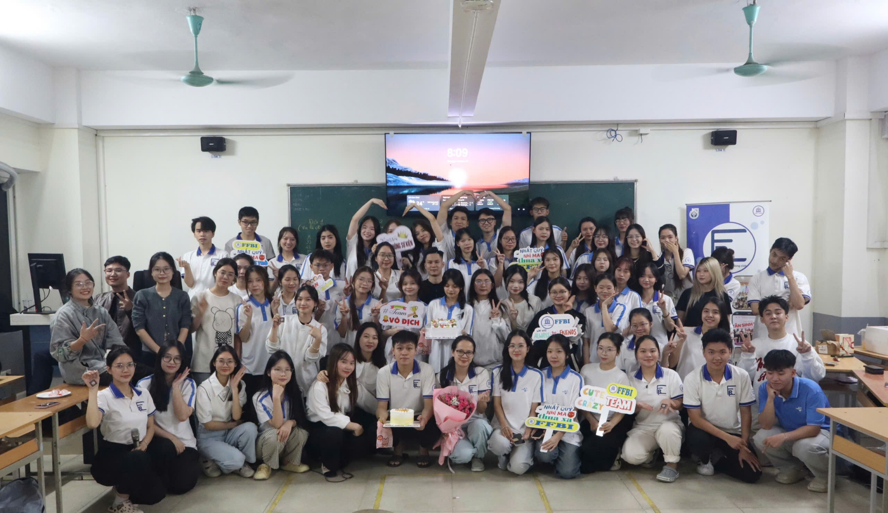
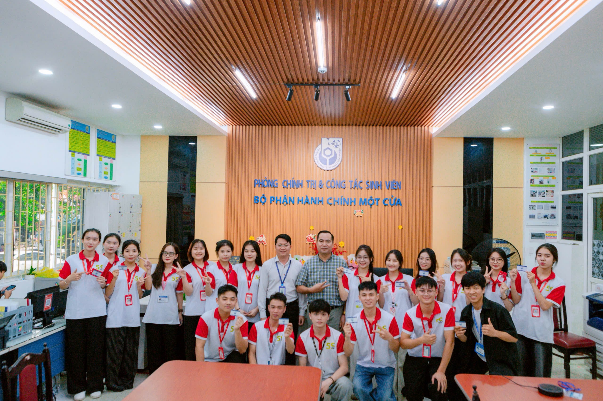

Một sinh viên được biết đến với từ khóa: ‘Tinh thần trách nhiệm, năng động và nhiệt huyết”

Mang trong mình tinh thần cầu tiến, nhiệt huyết của tuổi trẻ và khát vọng cống hiến cho tập thể, Dương Thị Kim Anh luôn chủ động học hỏi, không ngại thử thách và sẵn sàng đảm nhận nhiều vai trò trong học tập cũng như công tác phong trào. Với lối sống trách nhiệm, tác phong nghiêm túc và tinh thần xung kích, Kim Anh từng bước khẳng định hình ảnh sinh viên UNETI năng động, chuẩn mực và văn minh trong môi trường học đường. Chính sự nỗ lực bền bỉ và tinh thần trách nhiệm ấy đã giúp Kim Anh trở thành một trong những gương mặt sinh viên tiêu biểu của Khoa Tài chính Ngân hàng và Bảo hiểm.
Ngay từ những năm đầu đại học, Kim Anh đã sớm xác định cho mình mục tiêu rèn luyện toàn diện cả về học tập, đạo đức và kỹ năng. Với tinh thần nghiêm túc, ý thức phấn đấu không ngừng và sự tích cực trong các hoạt động tập thể, Kim Anh đã vinh dự được đứng trong hàng ngũ của Đảng Cộng sản Việt Nam, trở thành đảng viên trẻ sinh hoạt tại Chi bộ Phòng Chính trị và Công tác Sinh viên. Đây không chỉ là niềm vinh dự lớn lao mà còn là dấu mốc quan trọng, đánh dấu bước trưởng thành về nhận thức chính trị và trách nhiệm xã hội của một sinh viên ưu tú.
Trong quá trình học tập và rèn luyện tại Trường, Kim Anh luôn ý thức rõ vai trò và trách nhiệm của bản thân. Ở mỗi nhiệm vụ được giao, bạn đều thể hiện tinh thần chủ động, trách nhiệm, sẵn sàng hỗ trợ và đồng hành cùng tập thể trong việc triển khai các hoạt động chung. Bên cạnh việc tích cực tham gia các hoạt động của Đoàn – Hội và Nhà trường, Kim Anh còn đảm nhiệm nhiều vị trí quan trọng như Ủy viên Ban Chấp hành Hội Sinh viên Trường, Phó Trưởng Ban Truyền thông Văn hóa học đường – Câu lạc bộ Tuyên truyền Văn hóa học đường Sinh viên (SCC), đồng thời là thành viên tích cực của Câu lạc bộ Tài chính Ngân hàng (FBC).
 

 



Song song với hoạt động phong trào, Kim Anh luôn chú trọng nâng cao chất lượng học tập chuyên môn. Với tinh thần học tập nghiêm túc và ý chí vươn lên, bạn đã vinh dự nhận Học bổng khuyến khích học tập học kỳ I năm học 2024–2025, qua đó khẳng định năng lực và sự nỗ lực không ngừng của sinh viên Khoa Tài chính Ngân hàng và Bảo hiểm. Bên cạnh đó, Kim Anh còn hoàn thành Chương trình bồi dưỡng lý luận chính trị dành cho đối tượng kết nạp Đảng theo quy định của Trung ương với kết quả loại Giỏi, thể hiện bản lĩnh chính trị và tinh thần học tập nghiêm túc
Trong quá trình rèn luyện, Kim Anh đã đạt được nhiều thành tích nổi bật như: Đoàn viên ưu tú 3 kỳ liên tiếp; Giấy khen sinh viên có điểm rèn luyện và hoạt động phong trào loại xuất sắc các năm học 2023–2024, 2024–2025; Giấy vinh danh sinh viên tích cực tham gia tuyên truyền Văn hóa học đường UNETI, cùng nhiều giấy chứng nhận ghi nhận sự đóng góp tích cực cho phong trào của Khoa và Nhà trường. Đặc biệt, với khả năng tư duy, lập luận và bản lĩnh sân khấu, Kim Anh đã xuất sắc đạt Giải Nhất cuộc thi “Tiếng nói hùng biện FBC” do Câu lạc bộ Tài chính Ngân hàng tổ chức và Giải Nhì cuộc thi hùng biện “Strength of UNETI’s Voice” năm 2025, để lại dấu ấn rõ nét trong các hoạt động học thuật và phát triển kỹ năng mềm.
Bên cạnh học tập và hoạt động phong trào, Dương Thị Kim Anh còn tích cực tham gia các hoạt động tình nguyện, nhân đạo mang ý nghĩa xã hội sâu sắc. Với tinh thần sẻ chia và trách nhiệm đối với cộng đồng, Kim Anh thường xuyên tham gia các chương trình hiến máu tình nguyện, góp phần lan tỏa thông điệp nhân ái vì sức khỏe cộng đồng trong sinh viên Nhà trường. Đặc biệt, bạn còn tham gia hiến tóc nhằm ủng hộ bệnh nhân ung thư, thể hiện nghĩa cử cao đẹp, giàu tính nhân văn và tinh thần tương thân tương ái của tuổi trẻ UNETI
Chia sẻ về hành trình rèn luyện của mình, Kim Anh cho biết: “Hành trình học tập và trưởng thành tại UNETI đối với em không chỉ là quá trình tích lũy tri thức, mà còn là hành trình học cách sống có trách nhiệm, biết cống hiến và sẻ chia. Mỗi hoạt động em tham gia, mỗi nhiệm vụ được giao đều là cơ hội để em rèn luyện bản thân, hoàn thiện từ suy nghĩ đến hành động. Em luôn trân trọng môi trường học tập năng động, nhân văn của Nhà trường – nơi đã cho em cơ hội được thử sức, được sai, được sửa và được trưởng thành. Em mong rằng các bạn sinh viên UNETI sẽ luôn dám bước ra khỏi vùng an toàn, chủ động tham gia các hoạt động học tập và phong trào, bởi chính những trải nghiệm ấy sẽ trở thành hành trang quý giá trên con đường tương lai.”
Với tinh thần trách nhiệm, lối sống chuẩn mực và sự nỗ lực không ngừng, Dương Thị Kim Anh không chỉ là tấm gương sinh viên tiêu biểu trong học tập và phong trào, mà còn là hình ảnh đảng viên trẻ giàu nhiệt huyết, luôn sẵn sàng tiên phong, góp phần lan tỏa những giá trị tích cực trong cộng đồng sinh viên Trường.
Phòng Chính Trị & Công Tác Sinh Viên (uneti.edu.vn)
 Facebook CLB:
https://www.facebook.com/VHHDSVUNETI
Facebook CLB:
https://www.facebook.com/VHHDSVUNETI
Facebook Đoàn Thanh Niên UNETI:
https://www.facebook.com/DoanTN.HoiSV.Uneti
Facebook Phòng Chính trị & Công tác Sinh viên UNETI:
https://www.facebook.com/CTSV.UNETI
 TikTok CLB:
https://tiktok.com/@uneti.clb.scc
TikTok CLB:
https://tiktok.com/@uneti.clb.scc
✉️ Email SCC: clb.tuyentruyenvhhd@gmail.com
📞 Hotline CLB: 02432336137
🌐 Website Trường: https://uneti.edu.vn